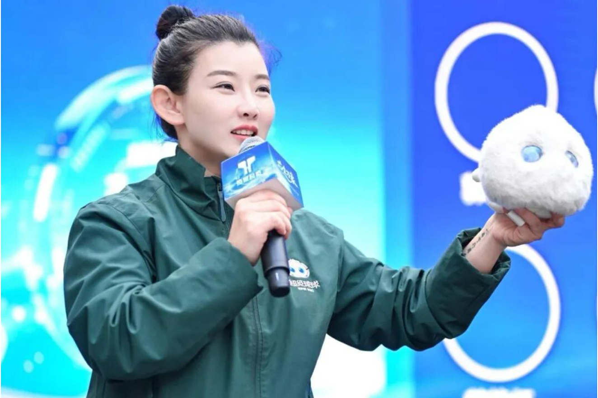
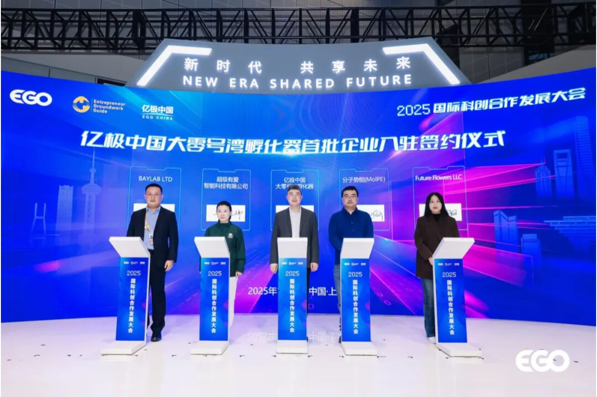
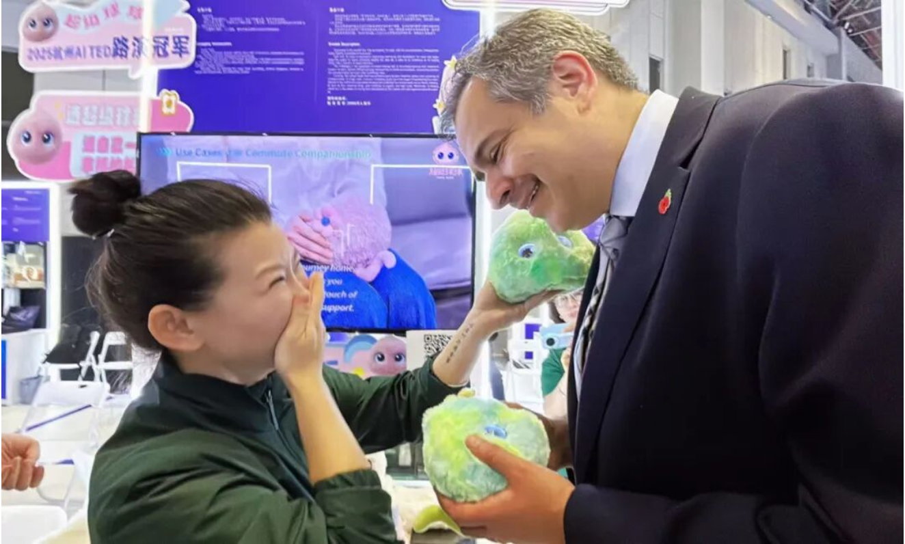
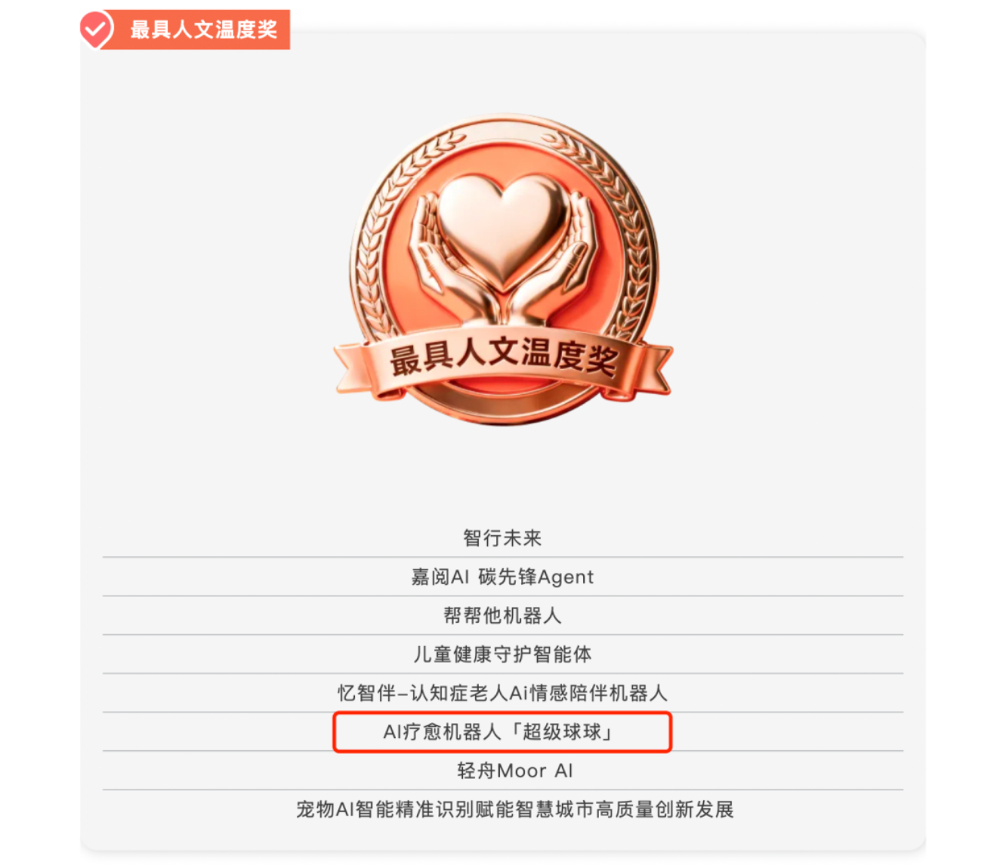
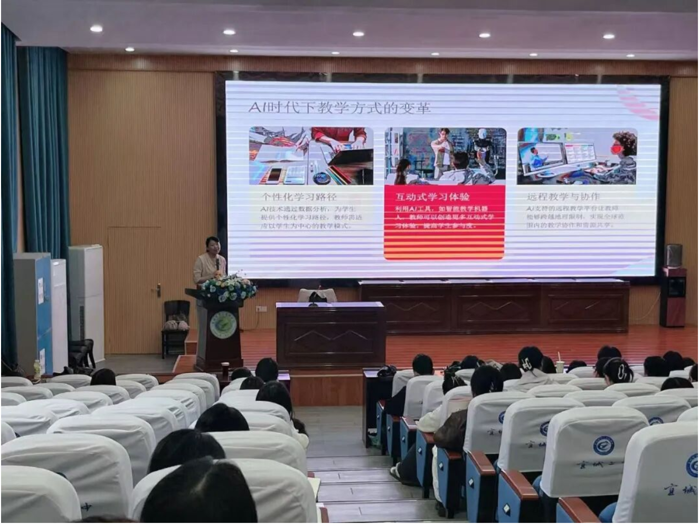
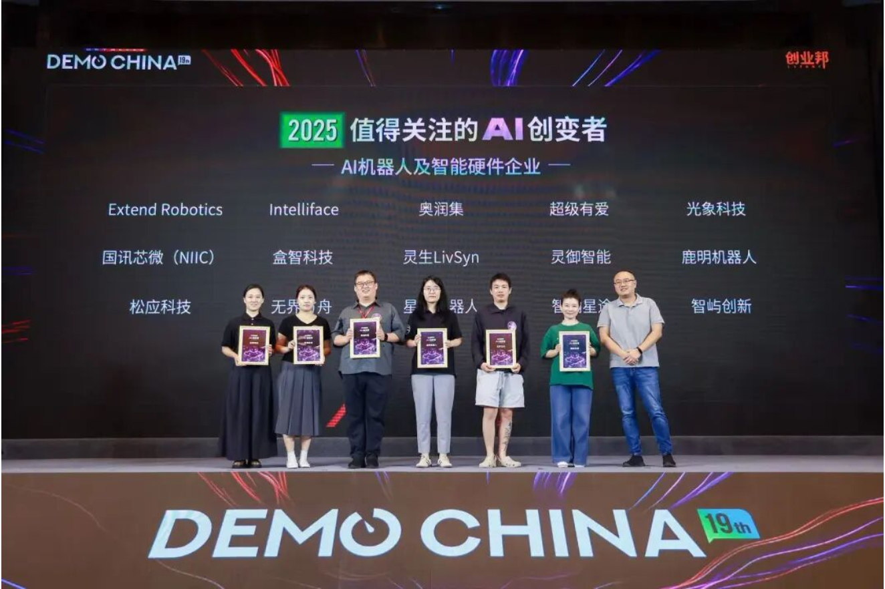
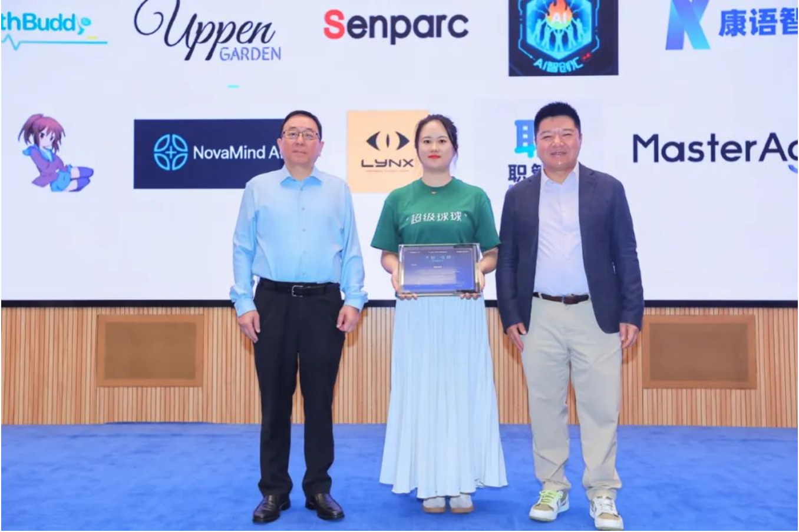
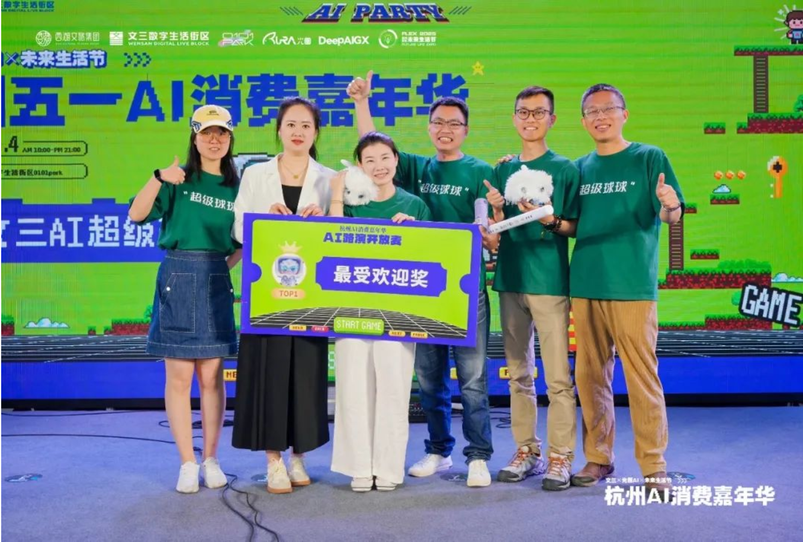

品牌资讯
记录超级球球走向更多家庭的每一步，也分享我们对 AI 陪伴与儿童成长的持续探索。

Latest
超级有爱受邀参加芯生万象生态大会，分享 AIoT 如何赋能心理健康行业
聚焦 AIoT、情绪健康与心理陪伴场景，呈现超级有爱在行业生态中的最新声音。

AI情绪疗愈机器人“超级球球”参展第八届进博会，获多位中外贵宾亲身体验
阅读全文

英国驻华贸易副使节 Sohail Shaikh：“每个人都需要一台超级球球！”
阅读全文

“超级球球”晋级 AI Agent 2025 大赛线下半决赛，并荣获“最具人文温度奖”！
阅读全文
All Stories
更多动态

“超级球球”走进宜城市青年教师心理素养培训班

超级有爱荣获“2025值得关注的AI创变者”

超级有爱与深度求解达成战略合作

“超级球球”成为 AI Agent 2025 大赛官方推荐项目！

“超级球球”疗愈级 AI 机器人亮相 IOTE 深圳物联网展，引线上线下围观潮

“超级球球”团队受邀参加 AI Agent 2025 全球专项赛启动仪式

超级有爱智能科技创始人元晓帅博士拜访清华大学未来实验室

“超级球球”团队获得「文三×光圈 AI TED」创赛路演第一名！

超级有爱智能科技正式落户杭州未来科技城！